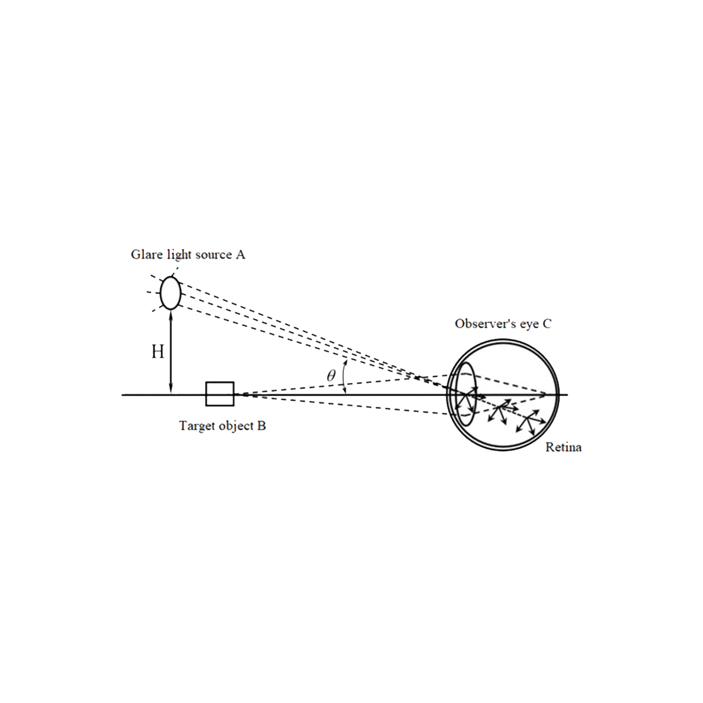

Dispersione retinica

Il primo meccanismo percettivo che viene integrato, è quello che rappresenta la dispersione retinca, ovvero la dispersione di luce all'interno della retina. Questo rappresenta un fenomeno biologico che è presente sempre durante il processo visivo. La dispersione retinica accade quando, durante la visione di una scena, la fonte luminosa che emana luce, con diversa potenza, viene catturata dall'occhio e dispersa al suo interno, provcando quella che è la perdita di contrasto intorno alle fonti luminose.